iTOi’s Optical Lens Technology makes it possible for you to look into your client’s eyes, which gives the visual experience necessary to convey your objectives and connect on a personal level.
01 Discover
iTOi booths are amazing and there are so many things you can do with them. The only pain-point Gabriel (VP Product and Operations, iTOi) reported us was “nonlinear purchase process “. However, after a thorough analysis.
we found and reported multiple issues and reasons affecting customer’s decision during purchase process.
The brainstorming made it pretty clear that iTOi require a strong, appealing and communicating website. But of course, purchase and payment process should be as simple (and quick) as possible.
02 Define
We defined the approach with guided research to enhance overall user experience by increasing usability and availability of most relevant information about products and subscriptions. From landing page to payment-processing
page, flow of information is relevant and information architecture is lean. Usability was further enhanced with added features of saving cart stats; every time a user take action.
03 Design
The design is user-centered, modern, clean, and full responsive in nature. Fine line-icons, pleasing colors, appealing polygon-backgrounds have been used while keeping accessibility in mind.
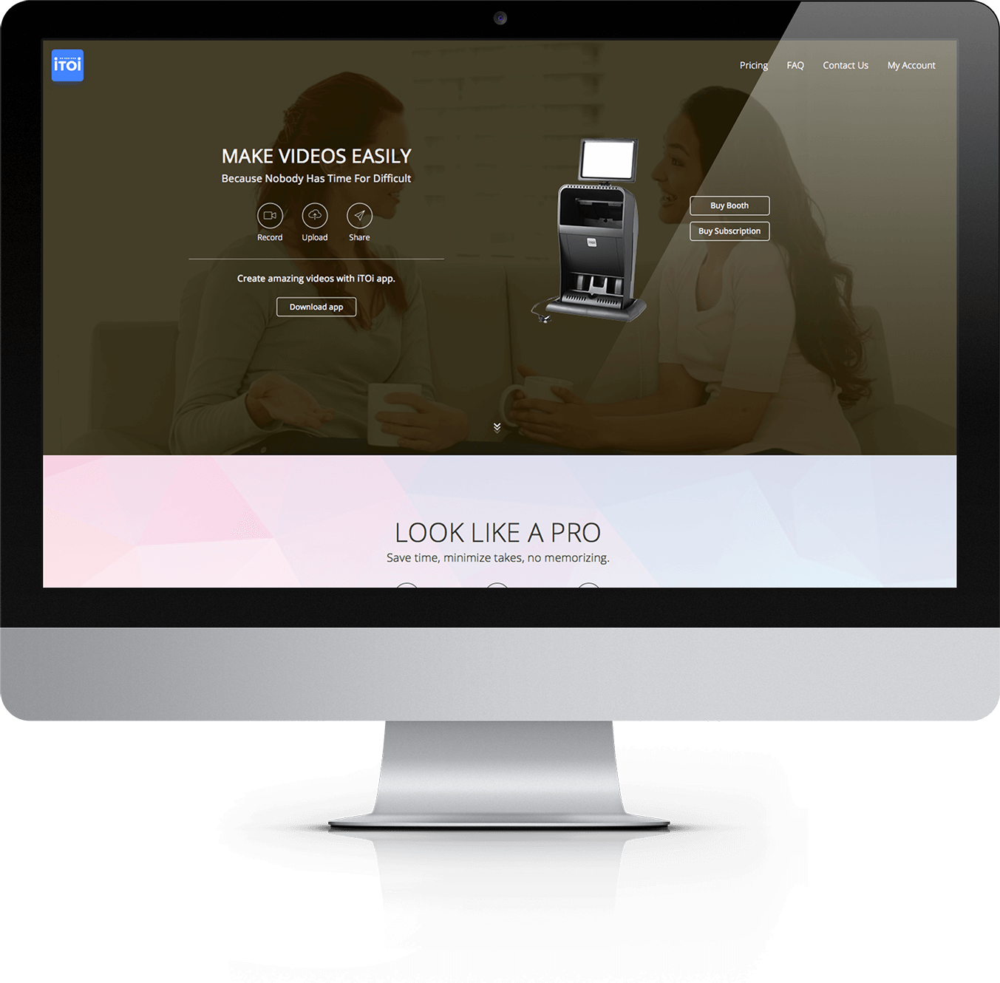
Desktop Design of iTOi Website
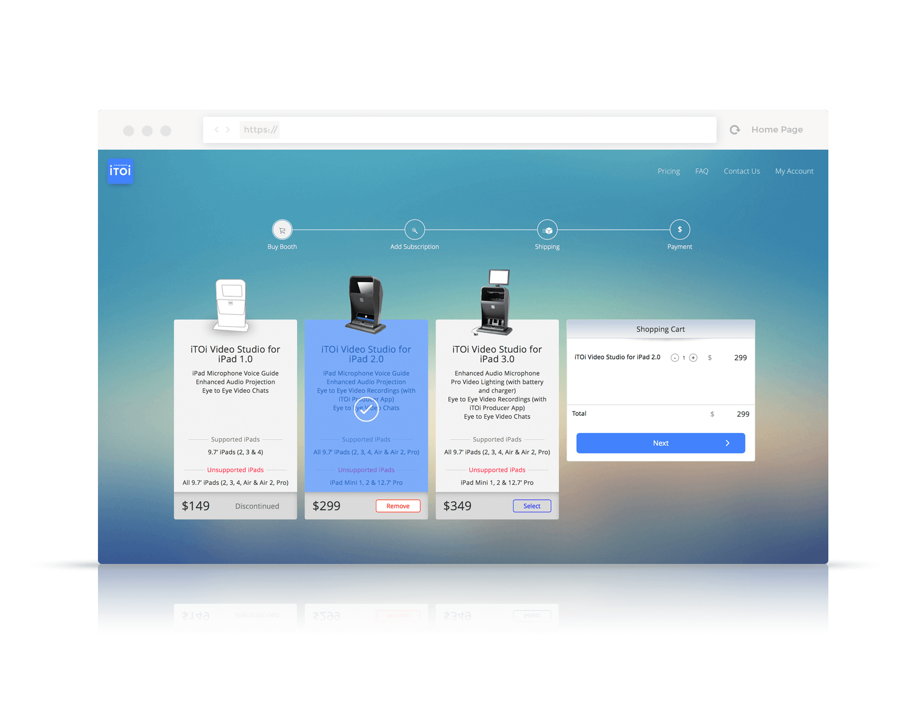
Buy Booth Page, iTOi
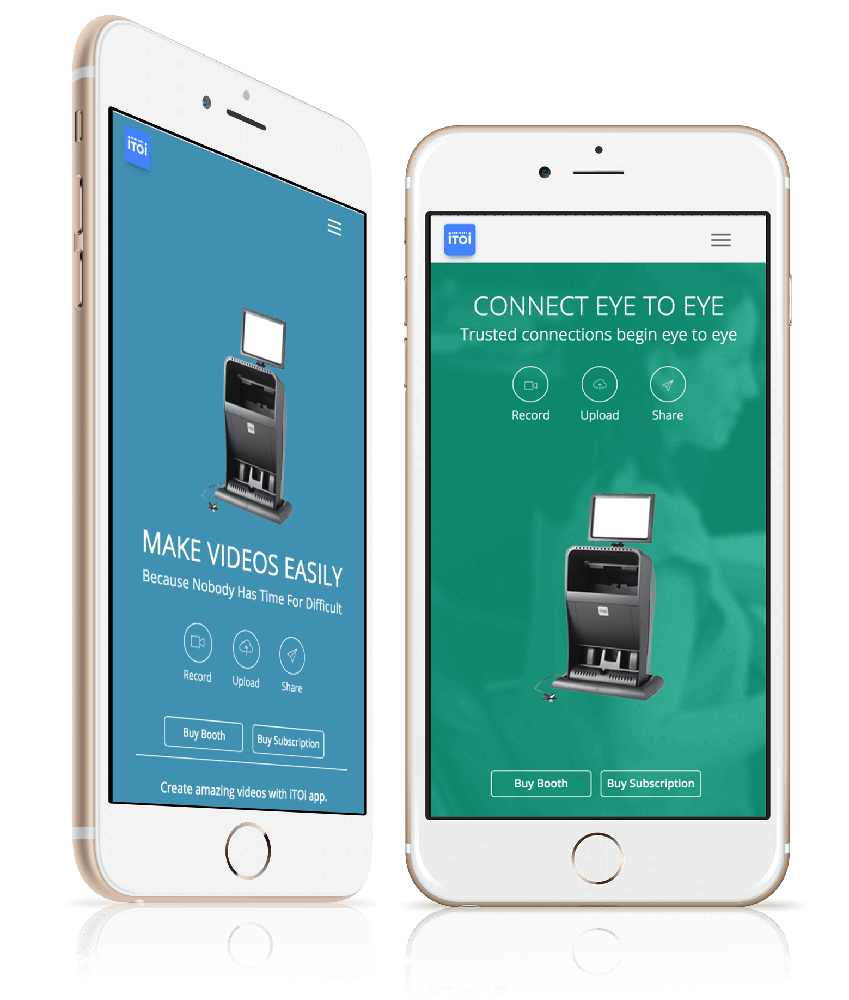
Responsive Website
04 Develop
Responsive Framework: Twitter Bootstrap
Backend-Development: Ruby on Rails
Payment Processing: PayPal
05 Deploy
The connection to iTOi site uses a strong protocol version and cipher suite, hosted on secure cloud with full https connection and is supported by all html5 enabled browsers.
06 Drive
We have used power of google analytics while performing prior research and have continued to use the same for new website. We are excited to announce that iTOi website will soon go live. :)
CrowdSolveit
AN UX PROJECT BY SYNERZIP
Overview
CrowdSolveIt is a social networking platform. The idea is to give social entrepreneurs access to the collective intelligence and experience of a vast number of users in order to solve complex problems that affect our world.It
is a platform with a purpose to help world by the people, for the people and of the people. The intention is to crowdsolve the issues based on humanitarian grounds with the help of people round the globe.
The objective of the project was to provide a platform where people can come and post their issues faced while solving any problem. In the same way experts can come and provide their inputs and help a poster.
01 Discover
Unlike regular forums this was a tough and complex one. The information was so distributed and yet to be coupled logically so that it is easier for the user to understand and reciprocate. In the initial stage we just received
a brief document with client’s idea and expectations which we were expected to be detailed out and derive business goals from it. We remotely conducted some stakeholder’s interview and formally laid out the thoughts
into paper so that we can define the strategic plan for it.
02 Define
After systematic documentation of requirements we started drilling various scenarios/workflows and defining the user experience around it. With CrowdSolveIt our main target was to reach the audience in a simplest possible
manner and get most out of them. We cannot ignore that it has a complex mechanism and so important is to get it right. The team was in continuous discussion with the client defining each stage in an elaborative manner.
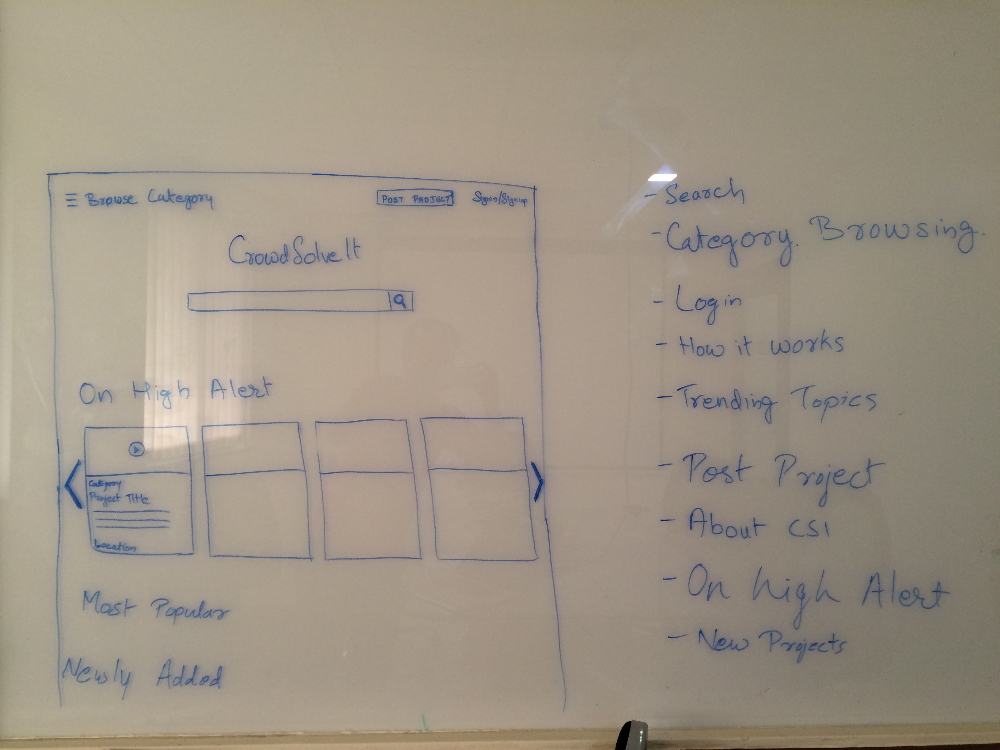
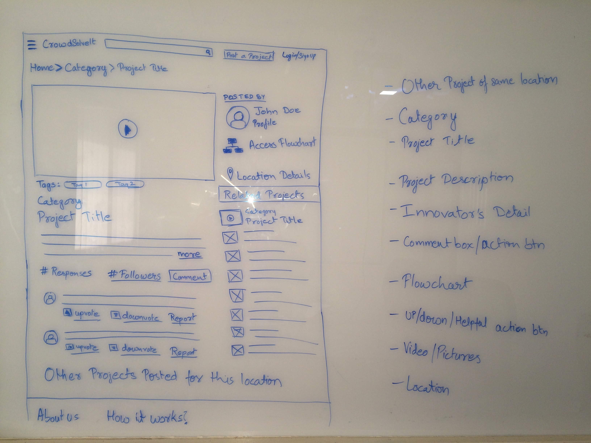
Paper Sketches
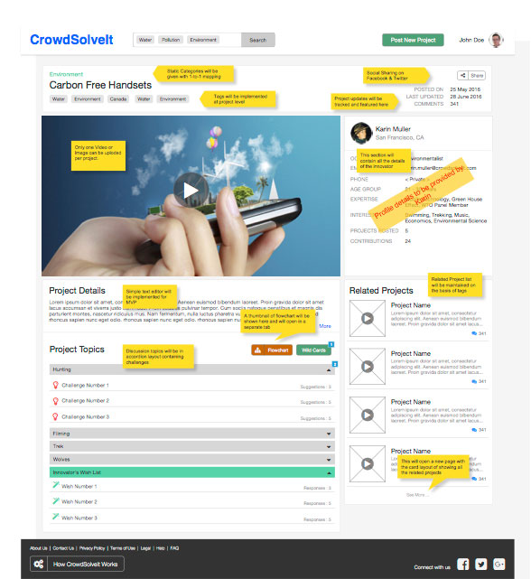
Lo-Fi Prototype
03 Design
The time has come to put the ideas on paper now. We created high fidelity interactive prototypes in axureRP preceding with paper prototypes and whiteboard designing. The designs were incrementally improvised based on the
outcomes of different usability checks and regular discussion with clients. Once finalised team move forward to convert some masters into elegant visual designs.
CrowSolveIt has a web non-responsive user interface design supporting all screens above 1024x768 resolution. This is backed up on AWS servers with proper load balancing techniques to optimise the trafficking in extreme
conditions.
06 Drive
The website was deployed with all the usability and quality checks. The designed was well defined and can be scaled to make it responsive on all form factors with half the efforts required. Additionally the website is powered
by google analytics helping client to monitor all the data footprints.
StuderGroup
AN UX PROJECT BY SYNERZIP
Overview
StuderGroup, a private health care consulting group (acquired by Huron Consulting Group) has a number of web based applications which can be accessed through a single sign-in portal.
01 Discover
StuderGroup web portal is a collection of multiple independent applications that require single sign-in. These applications are typically accessed from a range of devices and browsers. Our primary goal was to design a simple
and state of art user experience; supported by all legacy browsers (like IE 7) and devices (like 15' monitor and smartphones) to next generation handheld and fixed devices. After multiple customer interactions, careful
study of resources and gap analysis, we came to the conclusion that this project will require us to define additional strategy to meet the desired goal.
02 Define
A complex enterprise application system needs to have a well defined primary, secondary and tertiary navigation. All patterns, navigation, transitions and icons have to be selected while keeping support for IE7 browser
in mind. This does involve frequent interaction with customer, developers, UI development team and QAs to make sure everything is in perfect harmony.
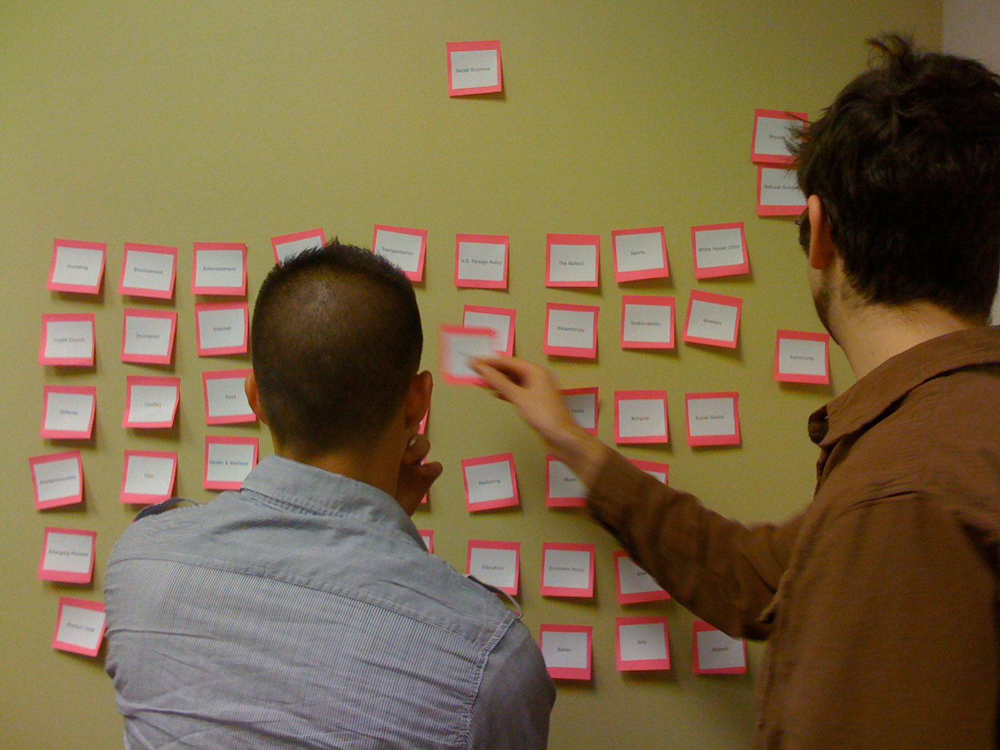
Card Sorting Activity
03 Design
The design is user-centered, modern, clean, and full responsive in nature. FontAwesome 3.0 icons and neutral colors have been used while keeping accessibility in mind.
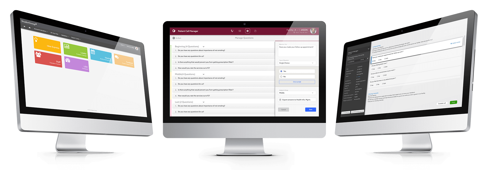
Desktop Design for StuderGroup Applications
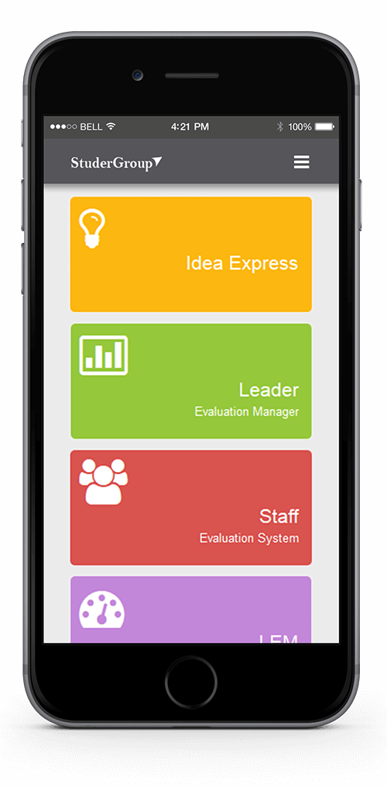
Responsive Website
04 Develop
For IE7 Support, we could have used htc files and relied on javascript hacks, but we chose to define our own algorithm and box model that mimics twitter bootstrap grid layout for IE7 and 8. Yes, it took a considerable effort
but performance on IE7 was dramatically improved by several seconds, which is an achievement in itself.
Frontend Framework: Bootstrap 3
Backend-Development: c# .NET
05 Deploy
The connection to StuderGroup uses a strong protocol version and cipher suite, hosted on secure cloud with full https connection and is supported by all browsers (including IE7). All applications are heavily tested and
performance is constantly monitored.
06 Drive
We have used google analytics to keep a close watch on number of users, browser type, behavior and navigation pattern to learn, plan and further enhance applications in iterative manner. All applications are live and customer
is happy. Yay !
Pune Plumbers
AN UX PROJECT BY SYNERZIP
Overview
Field service management (FSM) has significantly evolved in past few years. We at Synerzip, developed a field service management platform where an admin(s) can assign jobs and manage plumbers on field. Designing and building
a complete system out of scratch was truly an overwhelming experience.
01 Discover
After drafting initial requirement specification document we started with discovery of common patterns and pain-points of existing FSM applications. We also interviewed multiple plumbers and encountered the fact that almost
everyone is using smartphone and are pretty aware of apps like "Whatsapp, FaceBook and Hike".
02 Define
Our goal was clear and we were really confident about the planned approach, user persona and current market trends. The whole system has 3 major components : Admin Console, mobile app (ios and android) and smartwatch app.
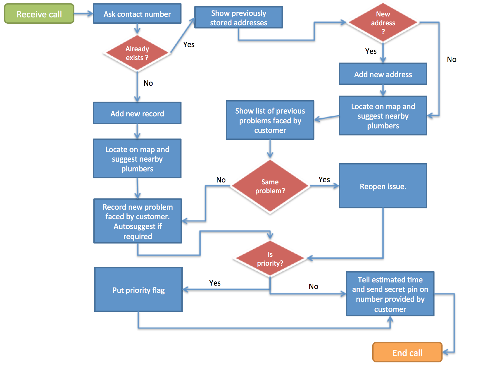
Activity diagram of Admin Console.
After brainstorming, we started defining information architecture for all components independently, removed potential technology barrier after discussing with internal dev team and once everything was ready, we jumped on
artboards to do what we all love. Designing.
03 Design
The admin console is fully responsive website where he can queue customer requests, prioritize them, assign them to plumbers suggested by system (based on their distance, work-load and ETAs). It based upon strict design
principles and is amazingly easy to understand.
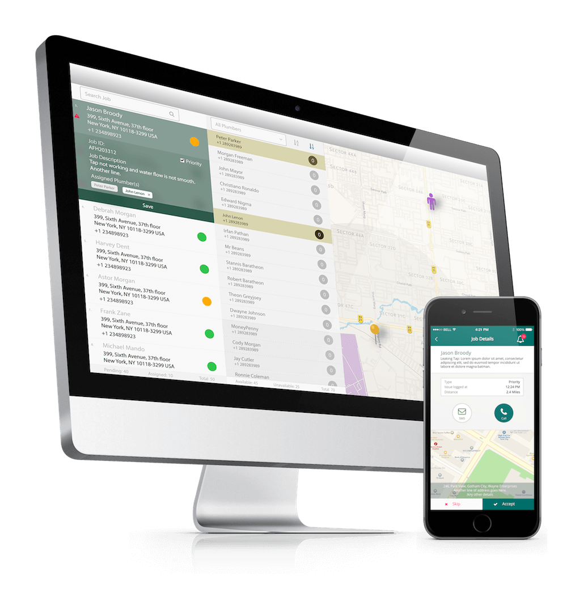
Activity diagram of Admin Console.
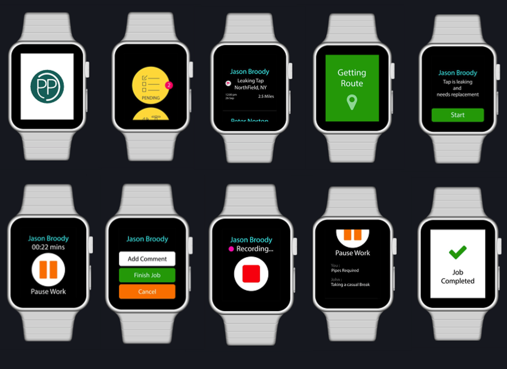
Activity diagram of Admin Console.
04 Develop
Frontend Framework: Bootstrap 3
Backend-Development: NodeJS
iOS and Android App: Swift 2.0 and native Android respectively
05 Deploy
Hosted on scalable AWS, facilitated with SMS gateways and push services. Validated and tested in live envrionment and conditions.
06 Drive
We have used google analytics and location services and usability of all apps have been verified multiple times.
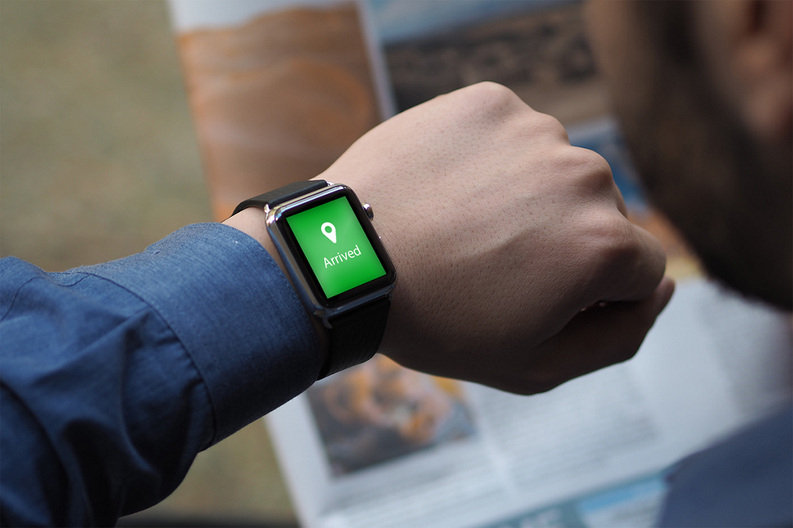
Activity diagram of Admin Console.
This field service management solution is generic solution and can be scaled and tweaked according to any other business requirements like "food delivery service, taxi service etc."
Plug & Ride
AN UX PROJECT BY SYNERZIP
Overview
Ridesharing or car-pooling is new eco and pocket friendly way of traveling with comfort. Plug & Ride is user-friendly and powerful ridesharing service, connecting riders to people, travelling the same way.
01 Discover
Ridesharing is common among people working in same organization or nearby office and have overlapping working hours. We started with learning such sharing patterns, common issues, comfort zone and preferences of individuals.
We also interviewed people who travel in groups and discovered that due to complexity of apps people prefer to communicate each other over phone/ sms/ whatsapp.
02 Define
With our initial brainstorming, it was clear that a ridesharing app needs to be fast, precise and really a time saver. Whole idea was to get rid of excessive tapping, complex navigation, minimize notifications and at the
same time keeping user informed.
Paper Prototypes
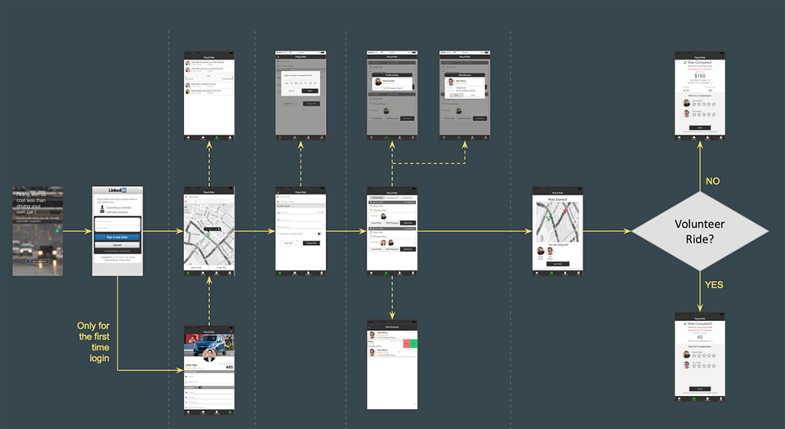
Task-Flow
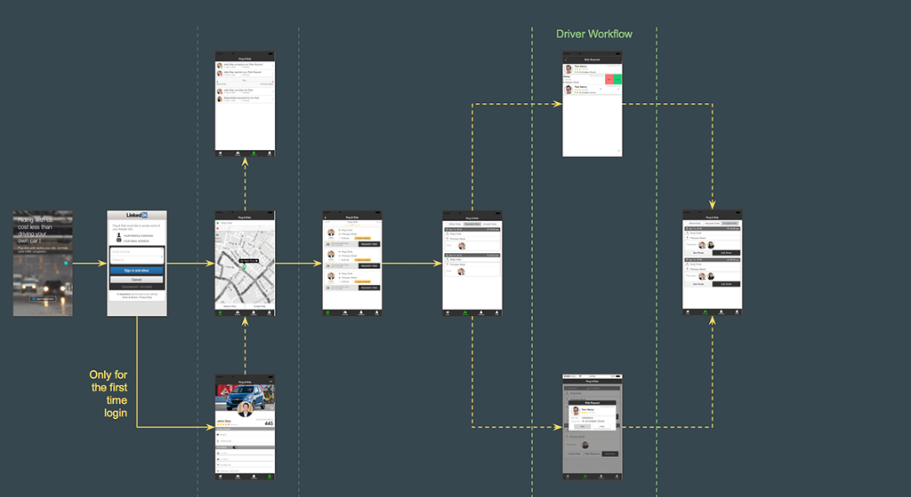
Task-Flow
03 Design
App has been designed and passes all iOS standards and leverages full power of operating system and iPhone's hardware.
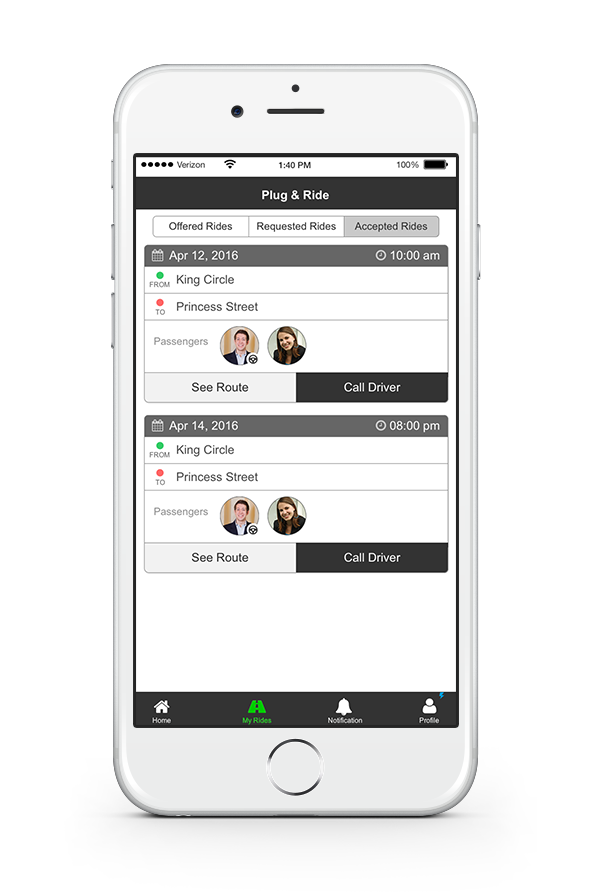
iOS App, Plug & Ride
04 Develop
iOS a App: Swift 2.0
05 Deploy & 06 Drive
Synerzip UX team has successfully handed over the project to deployment team, in a record time. The app will be available on App Store soon and we will monitor, drive and evolve it further as part of our commitment.
IDAvatars
The Art of Empathy
Overview
Through knowledge, education and empathy, we aim to create a global network of patients, caregivers, doctors & organizations who are empowered to improve healthcare for people and the communities where they live
01 Discover
The question was how we cost-effectively care for more patients with chronic conditions so they can live healthier lives keeping in mind the aging population, increasing cost of treating chronic condition and fewer healthcare
providers
02 Define
The answer we came up with was to move the point of care closer to the patient through use of emotionally intelligent, conversational avatars that educate empathize and socially connect people where they work, live and
play
03 Design
We designed an individualized mobile health diary hosted by a trusted avatar to which you can talk, tap or text to communicate. It is personalized to patient’s diagnosis & care plan and will collect data of patient’s symptoms,
activities of daily living, assessment and biometric data. It will share data in real time with patient and healthcare team.
Synerzip has successfully handed over the web browser based version to the deployment team and the iOS version will be delivered soon.
06 Drive
We are now adding new features based on the upcoming requirements.
Open Connect
AN UX PROJECT BY SYNERZIP
Overview
OpenConnect’s AutoiQ process automation solution is designed to automate routine tasks and workflows and improve first-pass efficiency AutoiQ is the latest generation of OpenConnect automation solutions that deliver value
and benefits spanning multiple industries. For example: Healthcare insurance companies have significantly increased operational first-pass rate by automating the processing of a large number of additional claims beyond
the capability of their primary claims adjudication application.
P&C insurance companies have reduced administrative costs, improved First Notice of Loss, reduced claims inventory, and improved quality and combined ratios.Customer service organizations have increased customer satisfaction
and service by improving First Call Resolution (FCR),order entry, and provisioning processes.
01 Discover
While doing our primary research on RPA (Robotic Process Automation) and AutoiQ’s approach, we interviewed business analysts, system programmers and administrators to learn about their roles, responsibilities, level of
comfort with existing systems. We also discovered major and minor pain-points, UX and usability issues for all available personas.
02 Define
AutoiQ is a rule based RPA system where UX is key differentiator. After definition of rules, process and schedules, robots carry out work on end machines and are constantly monitored via a centralized system that controls
them. These robots are really fast and can replace manual, not-so-creative and time consuming jobs, thus saving millions of money every year. AutoiQ links with other homogenous and in-house developed products and has
a powerful reporting engine.
Synerzip UX team has performed competitive analysis and thorough study of other RPA based systems to define a rock solid foundation; that is based upon core principles of RPA, adheres all standards and aims to deliver best
user experience to its users.
03 Design
AutoiQ's new design is super simplified. Our job is to design something that helps users do their complicated work in smartest possible way and we always try and strive to do that.
AutoiQ is still in its primary phase of design and we will soon be pushing it to development team which take pride of pixel-perfection.
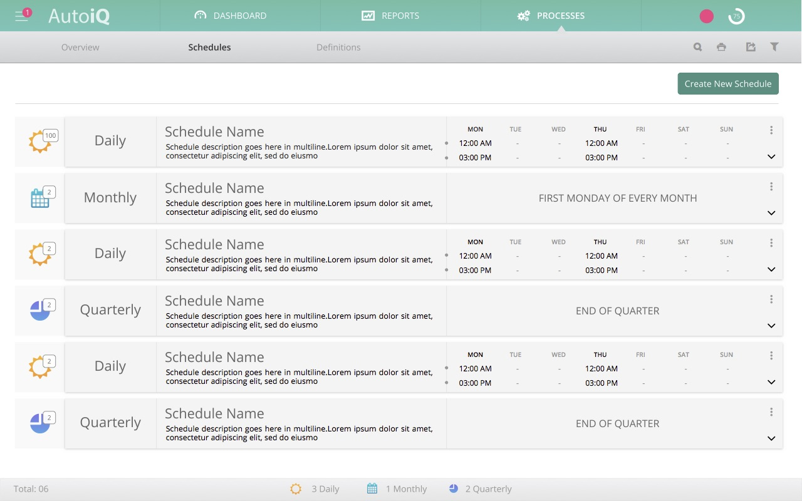
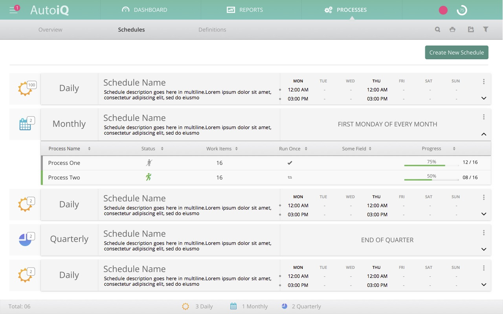
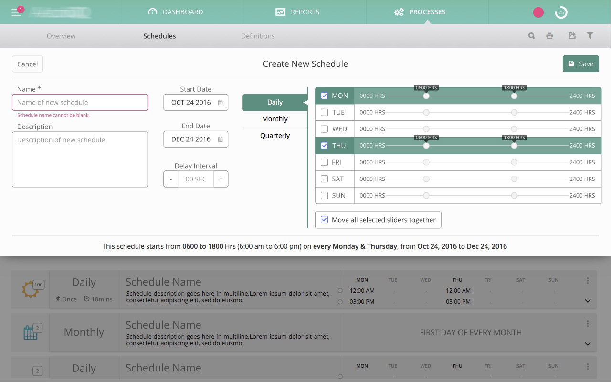
Hi Fidelity Designs
CMS
AN UX PROJECT BY SYNERZIP
Overview
Currently, many clinics in our country are still storing the patient’s record as physical documents which have their own time of expiry and prone to corrosion. Nurses needs to manually write down the patient’s information
and index their medical records. These works are so troublesome and plaguing. Moreover, there is the concern of security even.
In the era of technology, where everything needs to be done efficiently and effectively the existences of Clinic Management System (CMS) become necessary. The use of CMS can enhance the services and also the workflow of
all activity that happens in hospitals where it helps in reducing the workload of medical staff, the number of manpower needed and it also make hospitals management become more manageable, secure and easier to control.
The Clinic Management System is developed to digitize the daily operational activities in a clinic, before this is done manually. This system will involve all the clinic operation starting from patient registration until
billing the patient. The important thing is it will become easier for the data record and retrieval. This system will be able to generate report regarding the clinic operation. The target user for this system is staff
of the clinic, doctor and also the management. Above all the system developed for all major form factors viz web, mobile and tablet.
01 Discover
The first step was to discover the requirements of the product. So we did a detailed requirement analysis with the stakeholder while interviewing him for this project. We made some amazing discoveries on the basis of which
we ran a small survey with different doctors in the city to get down the exact pain points. To give a differential stand to the project we did competitive analysis where we got to know the exact trends going in the
market and what are the loopholes that can be addressed via this project.
02 Define
On the basis of our studies we drafted some documents which were discussed with the stakeholder and proposed an action plan for the project. Information Architecture and different Workflows were crafted with the team through
various brainstorming sessions.
03 Design
After scratching their heads to crafting various page designs, the team started to get their hands dirty on realizing their thoughts through Photoshop. Before visual designs we assured that the thoughts are well aligned
for the perfect solution to the user pain points, for which we did rapid prototyping in Axure and did Gorilla Testing with it. At every stage we keep in touch with the stakeholder and get his views on the designs.
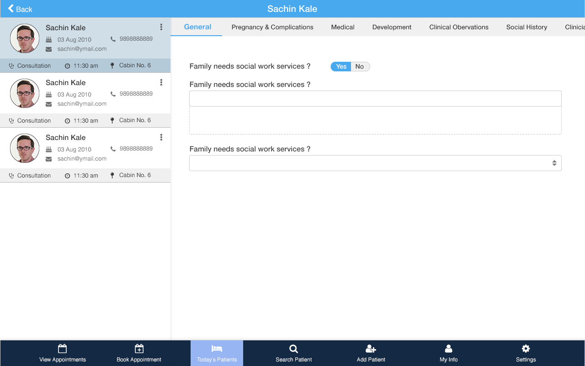
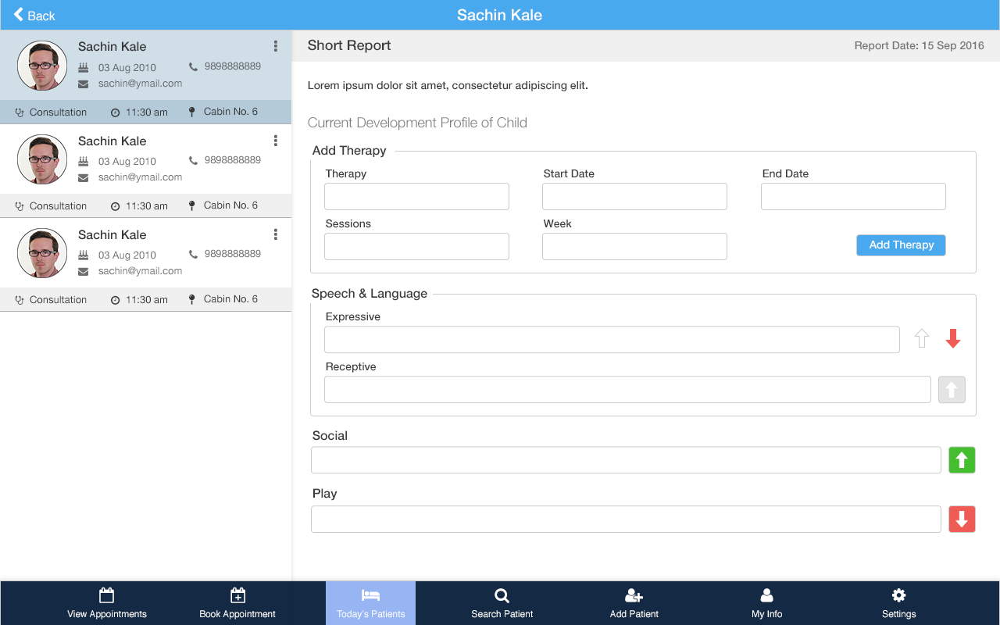
High Fidelity Designs
04 Develop
Front-end Bootstrap 3.3.6 & AngularJS v1.4
Back-end NodeJS v5.10.1
Database MySQL v5.7
iOS & Android Mobile Native Apps
05 Deploy
Clinic Management System is developed for all the popular form factors to give a comprehensive support to the client. This system can be access via Web and all range of Mobiles and Tablets. In spite of going with hybrid,
we have developed native application for a richer experience to the end user. All this is backed up on AWS servers with proper load balancing techniques to optimise the trafficking in extreme conditions.
06 Drive
The application is deployed with all the usability and quality checks. The designed was well engaged and providing a best user experience across all form factors.